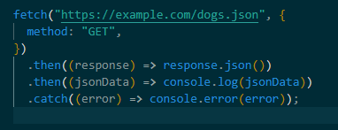

Ответ: Синхронные функции являются блокирующими, а асинхронные -
нет. В синхронных функциях одна операция должна завершиться,
прежде чем будет запущена следующая операция. В этом случае скрипт
выполняется строго по порядку операций, и выполнение скрипта
приостанавливается, если одна из операций занимает очень много
времени.
Асинхронные функции обычно принимают callback-функцию в
качестве параметра, и выполнение продолжается на следующей строке
сразу после вызова асинхронной функции. Callback-функция
вызывается только тогда, когда асинхронная операция завершена и стек вызовов
пуст. Ресурсоемкие операции, такие как загрузка данных с веб
сервера или запросы к базе данных, должны выполняться асинхронно, чтобы
основной поток мог продолжать выполнять другие операции вместо
блокировки до завершения этой долгой операции (в случае браузеров
пользовательский интерфейс будет зависать).
Ответ: Callback — функция, которая вызывается в ответ на совершение некоторого события. Для этого функцию передают в качестве аргумента
при вызове другой функции. Такой метод хорош в обработчиках событий, но для сложного асинхронного кода слишком неудобный и громоздкий.
Промис (Promise) — это объект-обёртка для асинхронного кода. Он содержит в себе состояние: вначале pending («ожидание»), затем — одно из:
fulfilled («выполнено успешно») или rejected («выполнено с ошибкой»). В понятиях цикла событий промис работает так же, как колбэк: функция,
которая должна выполниться (resolve или reject), находится в окружении Web API, а при наступлении события — попадает в очередь задач, откуда
потом — в стек вызова. Промисы придумали, чтобы организовывать асинхронный код последовательно.
Промисы решают проблему "ада" колбэков, их можно использовать для последовательного получения данных из нескольких конечных точек, но с меньшим
количеством кода и более простыми методами.
Но есть еще один способ обработки данных и вызовов API - async / await. Асинхронная функция помечается специальным ключевым словом async.
Это функции, которые всегда возвращают промисы. Внутри асинхронных функций можно вызывать другие асинхронные функции, без каких-либо then() или
колбэков, с помощью ключевого слова await. Таким образом, промис, который функция возвращает, автоматически разворачивается, и мы получаем значение, которое внутри промиса было.
Ответ: Цикл событий (event loop) отвечает за выполнение кода, сбор и обработку событий и выполнение
подзадач из очереди. Идея событийного цикла очень проста. Есть бесконечный цикл, в котором движок JavaScript ожидает задачи, исполняет их и снова ожидает появления новых.
Общий алгоритм движка:
пока есть задачи: выполнить их, начиная с самой старой;
бездействовать до появления новой задачи, а затем перейти к пункту 1.
Может так случиться, что задача поступает, когда движок занят чем-то другим, тогда она ставится в очередь. Эту очередь называют очередью макрозадач.
Задачи из очереди исполняются по правилу «первым пришёл – первым ушёл».
Помимо макрозадач существуют микрозадачи. Микрозадачи приходят только из кода. Обычно они создаются промисами: выполнение обработчика .then/catch/finally становится микрозадачей. Микрозадачи также используются «под капотом» await, т.к. это форма обработки промиса.
Также есть специальная функция queueMicrotask(func), которая помещает func в очередь микрозадач.
Сразу после каждой макрозадачи движок исполняет все задачи из очереди микрозадач перед тем, как выполнить следующую макрозадачу или отобразить изменения на странице, или сделать что-то ещё. Все микрозадачи завершаются до обработки каких-либо событий или рендеринга, или перехода к другой макрозадаче.
Ответ: При вызове какой-то функции она попадает в так называемый стек вызовов.
Стек — это структура данных, в которой элементы упорядочены так, что последний элемент, который попадает в стек, выходит из него первым (LIFO: last in, first out). Стек похож на стопку книг: та книга, которую мы кладём последней, находится сверху.
В стеке вызовов хранятся функции, до которых дошёл интерпретатор, и которые надо выполнить.
В очередь задач попадают все события: загрузка скрипта, движение мыши пользователем, исполнение отложенных событий. Задачи из очереди исполняются по правилу «первым пришёл – первым ушёл».
Ответ:
Ответ: По коду статуса можно понять, что произошло с запросом.
Ответ: Обмен данными в интернете построен на принципе «запрос — ответ»: браузер формирует запрос, сервер его анализирует и отправляет ответ. Правила, по которым нужно формулировать запросы и ответы, определяет протокол — HTTP.
Ответ: Cross-Origin Resource Sharing (CORS) - совместное использование ресурсов между разными источниками — это механизм, использующий дополнительные HTTP-заголовки, чтобы дать возможность браузеру получать разрешения на доступ к выбранным ресурсам с сервера на источнике (домене), отличном от того, что сайт использует в данный момент. Говорят, что агент пользователя делает запрос с другого источника (cross-origin HTTP request), если источник текущего документа отличается от запрашиваемого ресурса доменом, протоколом или портом.
В целях безопасности браузеры ограничивают cross-origin запросы, инициируемые скриптами. Например, XMLHttpRequest и Fetch API следуют политике одного источника (same-origin policy). Это значит, что web-приложения, использующие такие API, могут запрашивать HTTP-ресурсы только с того домена, с которого были загружены, пока не будут использованы CORS-заголовки. Механизм CORS поддерживает кросс-доменные запросы и передачу данных между браузером и web-серверами по защищённому соединению.
Стандарт Cross-Origin Resource Sharing работает с помощью добавления новых HTTP-заголовков, которые позволяют серверам описывать набор источников, которым разрешено читать информацию, запрашиваемую web-браузером.
Наиболее распространенная проблема при работе с CORS заключается в том, что браузер блокирует запрос из-за политики CORS. Браузер выдаст ошибку и отобразит в консоли следующее сообщение:
Access to XMLHttpRequest at 'http://localhost:8080/' from origin
'http://localhost:3000' has been blocked by CORS policy:
Response to preflight request doesn't pass access control
check: No 'Access-Control-Allow-Origin' header is present
on the requested resource.
Приведенная выше CORS-ошибка уведомляет пользователя о том, что браузер не может получить доступ к ресурсу (https://localhost:8080) из источника (https://localhost:3000), поскольку сервер его не одобрил. Это произошло из-за того, что сервер не ответил заголовком Access-Control-Allow-Origin с этим источником или символом * в ответе на предварительный CORS-запрос.
Запрос может быть заблокирован политикой CORS не только из-за невалидного источника, но и из-за неразрешенных заголовка HTTP, HTTP-метода или заголовка Cookie.
Фундаментальная идея “исправления CORS” заключается в том, чтобы отвечать на OPTIONS запросы, отправленные от клиента, корректными заголовками. Есть много способов начать отвечать корректными CORS. Вы можете использовать прокси-сервер или какое-нибудь middleware на своем сервере.
1. Настройка вашего сервера
По умолчанию, если вы являетесь владельцем сервера, вам необходимо настроить на своем сервере CORS-ответы, и это единственный способ правильно решить проблему. Вы можете добиться этого несколькими способами из нескольких слоев вашего приложения. Самый распространенный способ — использовать обратный прокси-сервер (reverse-proxy), API-шлюз или любой другой сервис маршрутизации, который позволяет добавлять заголовки к ответам. Для этого можно использовать множество сервисов, и вот некоторые из них: HAProxy, Linkerd, Istio, Kong, nginx, Apache, Traefik. Если ваша инфраструктура содержит только приложение без каких-либо дополнительных слоев, то вы можете добавить поддержку CORS в код самого приложения.
2. Установка расширения для браузера
Использование расширения для браузера может быть быстрым и простым способом решения проблем с CORS в вашей среде разработки. Самым большим преимуществом использования расширения для браузера является то, что вам не нужно менять свой код или конфигурацию. С другой стороны, вам необходимо установить расширение в каждый браузер, который вы используете для тестирования своего веб-приложения.
3. Отключение CORS-проверок в браузере
Вы можете полностью отключить CORS-проверки в своем браузере. Чтобы отключить CORS-проверки в Google Chrome, нужно закрыть браузер и запустить его с флагами --disable-web-security и --user-data-dir. После запуска Google Chrome не будет отправлять предварительные CORS-запросы и не будет проверять CORS-заголовки.
4. Настройка прокси-сервера
Если вы ищете решение, которое не требует от вас изменения настроек браузера, вам следует обратить внимание на прокси-сервера. Эта опция поможет вам избавиться от CORS-ошибок, ничего не меняя в самом браузере. Идея подхода заключается в том, чтобы отправлять все запросы на ваш сервер, который затем перенаправит запрос реальной службе, которую вы хотите использовать. Вы можете создать прокси-сервер самостоятельно с помощью языка и платформы по вашему предпочтению. Вам потребуется настроить CORS и реализовать функционал передачи полученных запросов в другую службу.
Ответ: REST сейчас — один из самых распространённых стилей API в интернете.
REST (Representational State Transfer) — стиль общения компонентов, при котором все необходимые данные указываются в параметрах запроса.
Отличительная особенность этого стиля — это стиль построения адресов и выбор метода. Всё взаимодействие между клиентом и сервером сводится к 4 операциям (CRUD):
Ответ: в инструментах разработчика во вкладке Network
Ответ: формат запрашиваемого контента: application/x-www-form-urlencoded, multipart/form-data, text/plain, application/json
Ответ:
